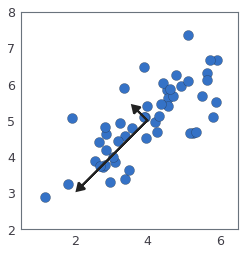
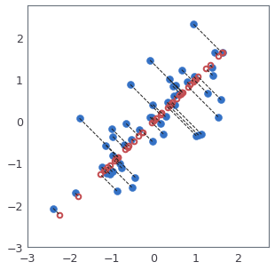
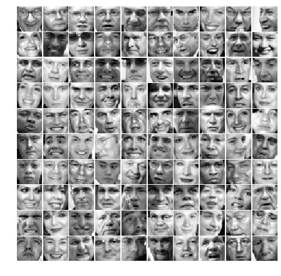

Principal Component Analysis¶
Introduction¶
In this exercise, you will use principal component analysis to find a low-dimensional representation of face images.
import numpy as np
import matplotlib.pyplot as plt
%matplotlib inline
Principal Component Analysis¶
In this exercise, you will use principal component analysis (PCA) to perform dimensionality reduction. You will first experiment with an example 2D dataset to get intuition on how PCA works, and then use it on a bigger dataset of 5000 face image dataset.
Example Dataset¶
To help you understand how PCA works, you will first start with a 2D dataset which has one direction of large variation and one of smaller variation. The cell below will plot the training data, also shown in here:
In this part of the exercise, you will visualize what happens when you use PCA to reduce the data from 2D to 1D. In practice, you might want to reduce data from 256 to 50 dimensions, say; but using lower dimensional data in this example allows us to visualize the algorithms better.
# Load the dataset into the variable X
X = np.loadtxt('Data/data1.csv', delimiter=',')
# Visualize the example dataset
plt.plot(X[:, 0], X[:, 1], 'bo', ms=10, mec='k', mew=1)
plt.axis([0.5, 6.5, 2, 8])
plt.gca().set_aspect('equal')
plt.grid(False)
Implementing PCA¶
In this part of the exercise, you will implement PCA. PCA consists of two computational steps:
Compute the covariance matrix of the data.
Use SVD (in python we use numpy’s implementation
np.linalg.svd) to compute the eigenvectors \(U_1\), \(U_2\), \(\dots\), \(U_n\). These will correspond to the principal components of variation in the data.
First, you should compute the covariance matrix of the data, which is given by:
where \(X\) is the data matrix with examples in rows, and \(m\) is the number of examples. Note that \(\Sigma\) is a \(n \times n\) matrix and not the summation operator.
After computing the covariance matrix, you can run SVD on it to compute the principal components. In python and numpy (or scipy), you can run SVD with the following command: U, S, V = np.linalg.svd(Sigma), where U will contain the principal components and S will contain a diagonal matrix. Note that the scipy library also has a similar function to compute SVD scipy.linalg.svd. The functions in the two libraries use the same C-based library (LAPACK) for the SVD computation, but the scipy version provides more options and arguments to control SVD computation. In this exercise, we will stick with the numpy implementation of SVD.
Complete the code in the following cell to implemente PCA.
def pca(X):
"""
Run principal component analysis.
Parameters
----------
X : array_like
The dataset to be used for computing PCA. It has dimensions (m x n)
where m is the number of examples (observations) and n is
the number of features.
Returns
-------
U : array_like
The eigenvectors, representing the computed principal components
of X. U has dimensions (n x n) where each column is a single
principal component.
S : array_like
A vector of size n, contaning the singular values for each
principal component. Note this is the diagonal of the matrix we
mentioned in class.
Instructions
------------
You should first compute the covariance matrix. Then, you
should use the "svd" function to compute the eigenvectors
and eigenvalues of the covariance matrix.
Notes
-----
When computing the covariance matrix, remember to divide by m (the
number of examples).
"""
# Useful values
m, n = X.shape
# You need to return the following variables correctly.
U = np.zeros(n)
S = np.zeros(n)
### BEGIN SOLUTION
Sigma = X.T @ X / m
U, S, V = np.linalg.svd(Sigma)
### END SOLUTION
return U, S
Before using PCA, it is important to first normalize the data by subtracting the mean value of each feature from the dataset, and scaling each dimension so that they are in the same range.
In the next cell, this normalization will be performed for you using the StandardScaler utility class from scikit-learn.
After normalizing the data, you can run PCA to compute the principal components. Your task is to complete the code in the function pca to compute the principal components of the dataset.
Once you have completed the function pca, the following cell will run PCA on the example dataset and plot the corresponding principal components found similar to the figure below.

The following cell will also output the top principal component (eigenvector) found, and you should expect to see an output of about [-0.707 -0.707]. (It is possible that numpy may instead output the negative of this, since \(U_1\) and \(-U_1\) are equally valid choices for the first principal component.)
# Before running PCA, it is important to first normalize X
from sklearn import preprocessing
scaler = preprocessing.StandardScaler().fit(X)
mu = scaler.mean_
sigma = scaler.scale_
X_norm = scaler.transform(X)
# Run PCA
U, S = pca(X_norm)
# Draw the eigenvectors centered at mean of data. These lines show the
# directions of maximum variations in the dataset.
fig, ax = plt.subplots()
ax.plot(X[:, 0], X[:, 1], 'bo', ms=10, mec='k', mew=0.25)
for i in range(2):
ax.arrow(mu[0], mu[1], 1.5 * S[i]*U[0, i], 1.5 * S[i]*U[1, i],
head_width=0.25, head_length=0.2, fc='k', ec='k', lw=2, zorder=1000)
ax.axis([0.5, 6.5, 2, 8])
ax.set_aspect('equal')
print('Top eigenvector: U[:, 0] = [{:.6f} {:.6f}]'.format(U[0, 0], U[1, 0]))
print(' (you should expect to see [-0.707107 -0.707107])')
### BEGIN HIDDEN TESTS
assert -0.707106 >= U[0,0] >= -0.707107
assert -0.707106 >= U[1,0] >= -0.707107
### END HIDDEN TESTS
Top eigenvector: U[:, 0] = [-0.707107 -0.707107]
(you should expect to see [-0.707107 -0.707107])
Dimensionality Reduction with PCA¶
After computing the principal components, you can use them to reduce the feature dimension of your dataset by projecting each example onto a lower dimensional space, \(x^{(i)} \rightarrow z^{(i)}\) (e.g., projecting the data from 2D to 1D). In this part of the exercise, you will use the eigenvectors returned by PCA and project the example dataset into a 1-dimensional space. In practice, if you were using a learning algorithm such as linear regression or perhaps neural networks, you could now use the projected data instead of the original data. By using the projected data, you can train your model faster as there are less dimensions in the input.
Projecting the data onto the principal components¶
You should now complete the code in the function projectData. Specifically, you are given a dataset X, the principal components U, and the desired number of dimensions to reduce to K. You should project each example in X onto the top K components in U. Note that the top K components in U are given by
the first K columns of U, that is Ureduce = U[:, :K].
def projectData(X, U, K):
"""
Computes the reduced data representation when projecting only
on to the top K eigenvectors.
Parameters
----------
X : array_like
The input dataset of shape (m x n). The dataset is assumed to be
normalized.
U : array_like
The computed eigenvectors using PCA. This is a matrix of
shape (n x n). Each column in the matrix represents a single
eigenvector (or a single principal component).
K : int
Number of dimensions to project onto. Must be smaller than n.
Returns
-------
Z : array_like
The projects of the dataset onto the top K eigenvectors.
This will be a matrix of shape (m x k).
Instructions
------------
Compute the projection of the data using only the top K
eigenvectors in U (first K columns).
For the i-th example X[i,:], the projection on to the k-th
eigenvector is given as follows:
x = X[i, :]
projection_k = np.dot(x, U[:, k])
"""
# You need to return the following variables correctly.
Z = np.zeros((X.shape[0], K))
### BEGIN SOLUTION
Ureduce = U[:, :K]
Z = X @ Ureduce
### END SOLUTION
return Z
Once you have completed the code in projectData, the following cell will project the first example onto the first dimension and you should see a value of about 1.481 (or possibly -1.481, if you got \(-U_1\) instead of \(U_1\)).
# Project the data onto K = 1 dimension
K = 1
Z = projectData(X_norm, U, K)
print('Projection of the first example: {:.6f}'.format(Z[0, 0]))
print('(this value should be about : 1.496313)')
### BEGIN HIDDEN TESTS
assert 1.496312 <= abs(Z[0,0]) <= 1.496314
### END HIDDEN TESTS
Projection of the first example: 1.496313
(this value should be about : 1.496313)
Reconstructing an approximation of the data¶
After projecting the data onto the lower dimensional space, you can approximately recover the data by projecting them back onto the original high dimensional space. Your task is to complete the function recoverData to project each example in Z back onto the original space and return the recovered approximation in Xrec.
def recoverData(Z, U, K):
"""
Recovers an approximation of the original data when using the
projected data.
Parameters
----------
Z : array_like
The reduced data after applying PCA. This is a matrix
of shape (m x K).
U : array_like
The eigenvectors (principal components) computed by PCA.
This is a matrix of shape (n x n) where each column represents
a single eigenvector.
K : int
The number of principal components retained
(should be less than n).
Returns
-------
X_rec : array_like
The recovered data after transformation back to the original
dataset space. This is a matrix of shape (m x n), where m is
the number of examples and n is the dimensions (number of
features) of original datatset.
Instructions
------------
Compute the approximation of the data by projecting back
onto the original space using the top K eigenvectors in U.
For the i-th example Z[i,:], the (approximate)
recovered data for dimension j is given as follows:
v = Z[i, :]
recovered_j = np.dot(v, U[j, :K])
Notice that U[j, :K] is a vector of size K.
"""
# You need to return the following variables correctly.
X_rec = np.zeros((Z.shape[0], U.shape[0]))
### BEGIN SOLUTION
X_rec = Z @ U[:,:K].T
### END SOLUTION
return X_rec
Once you have completed the code in recoverData, the following cell will recover an approximation of the first example and you should see a value of about [-1.058 -1.058]. The code will then plot the data in this reduced dimension space. This will show you what the data looks like when using only the corresponding eigenvectors to reconstruct it. An example of what you should get for PCA projection is shown in this figure:

In the figure above, the original data points are indicated with the blue circles, while the projected data points are indicated with the red circles. The projection effectively only retains the information in the direction given by \(U_1\). The dotted lines show the distance from the data points in original space to the projected space. Those dotted lines represent the error measure due to PCA projection.
X_rec = recoverData(Z, U, K)
print('Approximation of the first example: [{:.6f} {:.6f}]'.format(X_rec[0, 0], X_rec[0, 1]))
print(' (this value should be about [-1.058053 -1.058053])')
# Plot the normalized dataset (returned from featureNormalize)
fig, ax = plt.subplots(figsize=(5, 5))
ax.plot(X_norm[:, 0], X_norm[:, 1], 'bo', ms=8, mec='b', mew=0.5)
ax.set_aspect('equal')
plt.axis([-3, 2.75, -3, 2.75])
# Draw lines connecting the projected points to the original points
ax.plot(X_rec[:, 0], X_rec[:, 1], 'ro', mec='r', mew=2, mfc='none')
for xnorm, xrec in zip(X_norm, X_rec):
ax.plot([xnorm[0], xrec[0]], [xnorm[1], xrec[1]], '--k', lw=1)
### BEGIN HIDDEN TESTS
assert X_rec[0, 0] <= -1.058052
assert X_rec[0, 1] <= -1.058052
assert X_rec[0, 0] >= -1.058053
assert X_rec[0, 1] >= -1.058053
### END HIDDEN TESTS
Approximation of the first example: [-1.058053 -1.058053]
(this value should be about [-1.058053 -1.058053])
Face Image Dataset¶
In this part of the exercise, you will run PCA on face images to see how it can be used in practice for dimension reduction. The dataset ex7faces.mat contains a dataset X of face images, each \(32 \times 32\) in grayscale. This dataset was based on a cropped version of the labeled faces in the wild dataset. Each row of X corresponds to one face image (a row vector of length 1024).
In order to visualize the faces, we define a helper function in the next cell.
def displayData(X, example_width=None, figsize=(10, 10)):
"""
Displays 2D data in a nice grid.
Parameters
----------
X : array_like
The input data of size (m x n) where m is the number of examples and n is the number of
features.
example_width : int, optional
THe width of each 2-D image in pixels. If not provided, the image is assumed to be square,
and the width is the floor of the square root of total number of pixels.
figsize : tuple, optional
A 2-element tuple indicating the width and height of figure in inches.
"""
m, n = X.shape
example_width = example_width or int(np.round(np.sqrt(n)))
example_height = int(n / example_width)
# Compute number of items to display
display_rows = int(np.floor(np.sqrt(m)))
display_cols = int(np.ceil(m / display_rows))
fig, ax_array = plt.subplots(display_rows, display_cols, figsize=figsize)
fig.subplots_adjust(wspace=0.025, hspace=0.025)
ax_array = ax_array.ravel()
for i, ax in enumerate(ax_array):
ax.imshow(X[i].reshape(example_height, example_width, order='F'), cmap='gray')
ax.axis('off')
The next cell will load and visualize the first 100 of these face images similar to what is shown in this figure:

# Load Face dataset
X = np.loadtxt('Data/faces.csv', delimiter=',')
# Display the first 100 faces in the dataset
displayData(X[:100, :], figsize=(8, 8))
PCA on Faces¶
To run PCA on the face dataset, we first normalize the dataset by subtracting the mean of each feature from the data matrix X. After running PCA, you will obtain the principal components of the dataset. Notice that each principal component in U (each column) is a vector of length \(n\) (where for the face dataset, \(n = 1024\)). It turns out that we can visualize these principal components by reshaping each of them into a \(32 \times 32\) matrix that corresponds to the pixels in the original dataset.
The following cell will first normalize the dataset for you and then run your PCA code. Then, the first 36 principal components (conveniently called eigenfaces) that describe the largest variations are displayed. If you want, you can also change the code to display more principal components to see how they capture more and more details.
# normalize X by subtracting the mean value from each feature
scaler = preprocessing.StandardScaler().fit(X)
mu = scaler.mean_
sigma = scaler.scale_
X_norm = scaler.transform(X)
# Run PCA
U, S = pca(X_norm)
# Visualize the top 36 eigenvectors found
displayData(U[:, :36].T, figsize=(8, 8))
Dimensionality Reduction¶
Now that you have computed the principal components for the face dataset, you can use it to reduce the dimension of the face dataset. This allows you to use your learning algorithm with a smaller input size (e.g., 100 dimensions) instead of the original 1024 dimensions. This can help speed up your learning algorithm.
The next cell will project the face dataset onto only the first 100 principal components. Concretely, each face image is now described by a vector \(z^{(i)} \in \mathbb{R}^{100}\). To understand what is lost in the dimension reduction, you can recover the data using only the projected dataset.
# Project images to the eigen space using the top k eigenvectors
# If you are applying a machine learning algorithm
K = 100
Z = projectData(X_norm, U, K)
print('The projected data Z has a shape of: ', Z.shape)
The projected data Z has a shape of: (5000, 100)
In the next cell, an approximate recovery of the data is performed and the original and projected face images are displayed similar to what is shown here:
 |
 |
From the reconstruction, you can observe that the general structure and appearance of the face are kept while the fine details are lost. This is a remarkable reduction (more than 10x) in the dataset size that can help speed up your learning algorithm significantly. For example, if you were training a neural network to perform person recognition (given a face image, predict the identity of the person), you can use the dimension reduced input of only a 100 dimensions instead of the original pixels.
# Project images to the eigen space using the top K eigen vectors and
# visualize only using those K dimensions
# Compare to the original input, which is also displayed
K = 100
X_rec = recoverData(Z, U, K)
# Display normalized data
displayData(X_norm[:100, :], figsize=(6, 6))
plt.gcf().suptitle('Original faces')
# Display reconstructed data from only k eigenfaces
displayData(X_rec[:100, :], figsize=(6, 6))
plt.gcf().suptitle('Recovered faces');